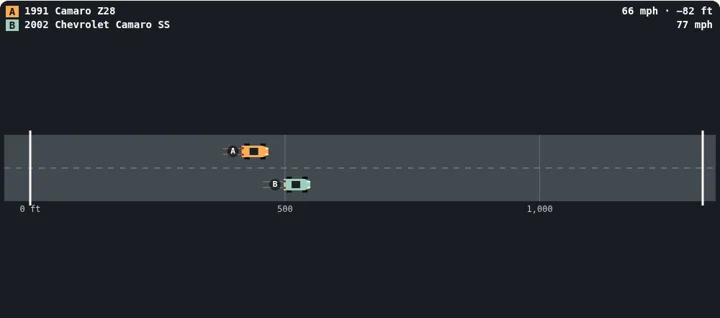
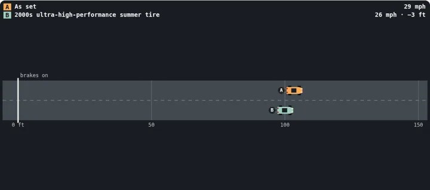
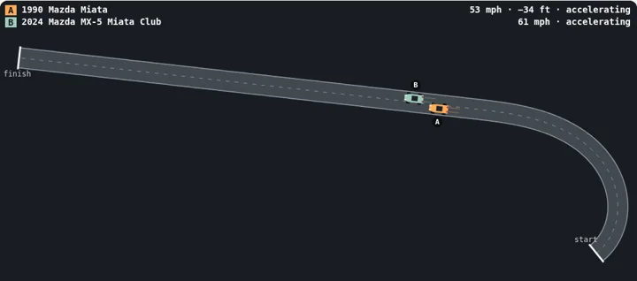

Test
Try a different gear, a lighter setup or a new suspension geometry. See what changes before you buy parts.
Modify a vehicleWatch it happen
Six model-driven replays. Pick a maneuver, then choose the cars or the change you want to test.

Launch & accelerateTwo cars launch side by side. Watch where gearing and grip open the gap.
Brake in a straight lineWatch the same car stop on two tire setups and compare the distances. Hold a cornerCompare steady-state cornering speed on a fixed radius.
Hold a cornerCompare steady-state cornering speed on a fixed radius. Brake into a cornerSee how braking and cornering compete for the same grip at entry.
Brake into a cornerSee how braking and cornering compete for the same grip at entry.
Power out of a cornerCompare how the model puts power down as the steering opens. Link a series of cornersFollow a prescribed line through a hairpin, sweeper or S-curve.
Link a series of cornersFollow a prescribed line through a hairpin, sweeper or S-curve.Suspension and handling
Follow what the wheels and links do as the car moves.
Engine and drivetrain
Find out where a change helps, and what it costs elsewhere.
Tires and traction
See what limits grip when a car accelerates, turns or stops.
Weight and balance
Find out how much a lighter part helps and where its weight matters.